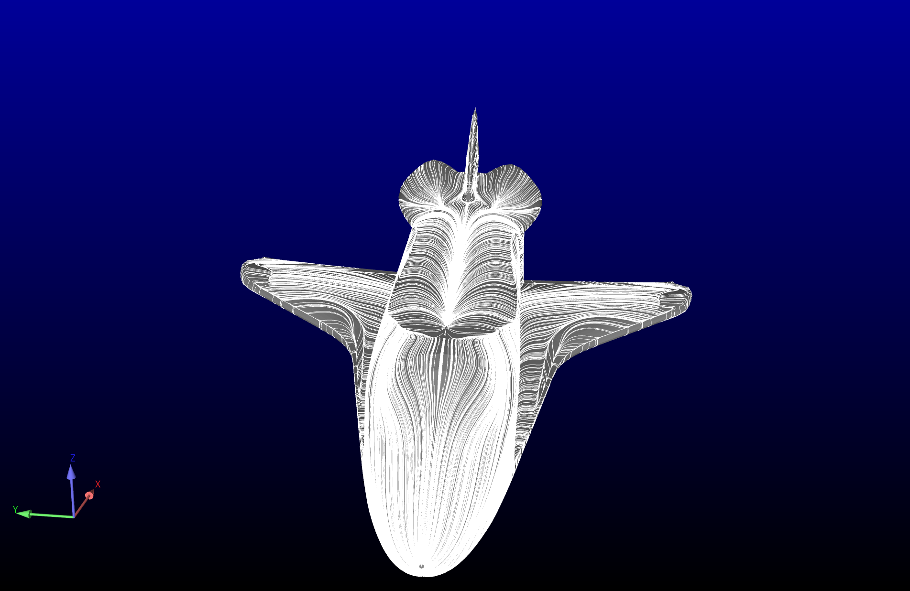
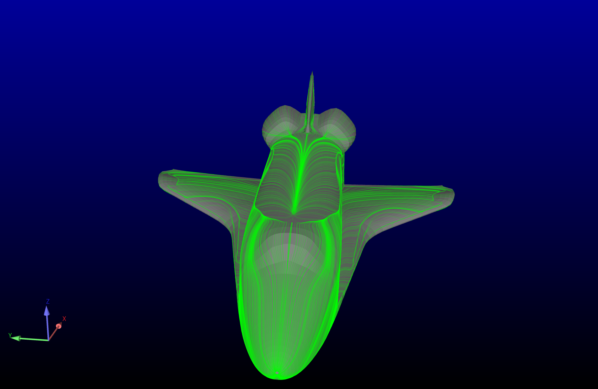
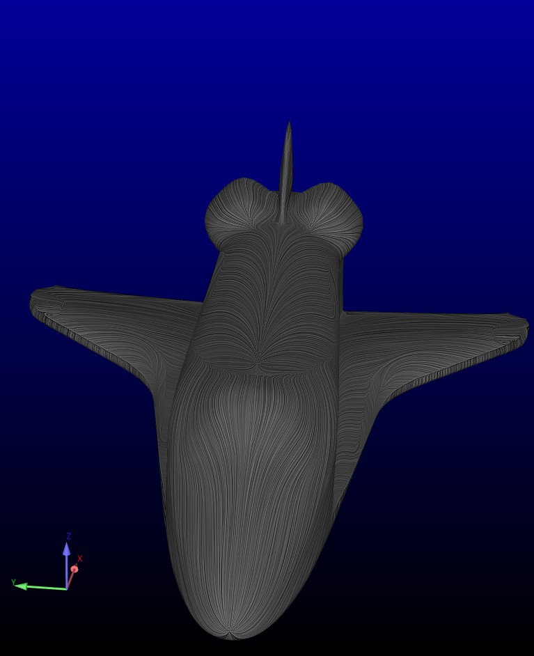

Note
Go to the end to download the full example code.
Surface Restricted Traces and Line Integral Convolution#
Utilize EnSight to investigate two types of surface streamlines:
Surface Restricted Traces (using Particle Trace)
Line Integral Convolution (LIC)
This example works with EnSight version 24.2 or later.
Start an EnSight session#
Launch and connect to an instance of EnSight. This example uses a local EnSight installation.
from ansys.pyensight.core import LocalLauncher
session = LocalLauncher().start()
Load a dataset#
Load Shuttle Session file included in the EnSight installation and render

session.ensight.objs.ensxml_restore_file(
f"{session.cei_home}/ensight{session.cei_suffix}gui/demos/Shuttle Basic.ens"
)
session.ensight.view.highlight_parts("OFF")
session.ensight.view_transf.fit(0)
session.show("image", width=800, height=600)
Using Particle Trace to create Surface Restricted Traces#
Using a Particle Trace capability Parent Part and Emit part are the same part. Surface Restriction is ON.
emitter_part = session.ensight.utils.parts.select_parts_by_dimension(2)
parent_parts = emitter_part
npts = 1500 # number of emitters
SRTpart = session.ensight.utils.parts.create_particle_trace_from_parts(
"SurfaceRestrictedTrace",
"Momentum",
parts=emitter_part,
source_parts=parent_parts,
direction="+/-",
surface_restrict=True,
num_points=npts,
)
session.show("image", width=800, height=600)
Change Visual Attributes#
Modify the attributes of the Surface Restricted Traces to be visually closer to flourescene or titanium dioxide (experimental use)
SRTpart.colorbyrgb = [0, 1, 0]
SRTpart.OPAQUENESS = 0.25
session.show("image", width=800, height=600)
Try Line Integral Convolution (LIC) instead#
As we do not already have a near-surface, non-zero vector defined we need to create ‘Offset’ Variable. Create Offset Variable for Value of Momentum at 2.e-5 distance into fluid domain Specify Offset Variable as the variable for LIC Specify High Contrast and 1 length for LIC Specify that we want to see LIC for the Shuttle Surface
SRTpart.VISIBLE = False
offset_var = session.ensight.utils.variables.calculator.offsetvar(["Shuttle"], "Momentum", 2.0e-5)
current_case = session.ensight.objs.core.CURRENTCASE[0]
current_case.SFTVARIABLE = offset_var
current_case.SFTCONTRAST = True
current_case.SFTNORMLENGTH = 1.0
session.ensight.objs.core.PARTS["Shuttle"][0].SHOWSFT = True
session.show("image", width=800, height=600)
Close the session#
Close the connection and shut down the EnSight instance.
# sphinx_gallery_thumbnail_path = '_static/05_srt_lic_3.png'
session.close()